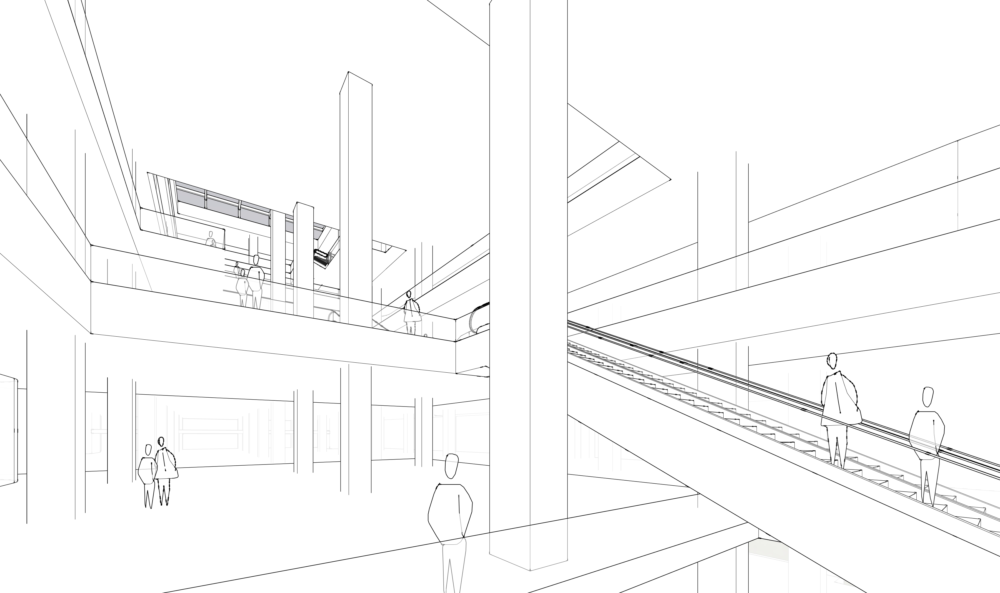
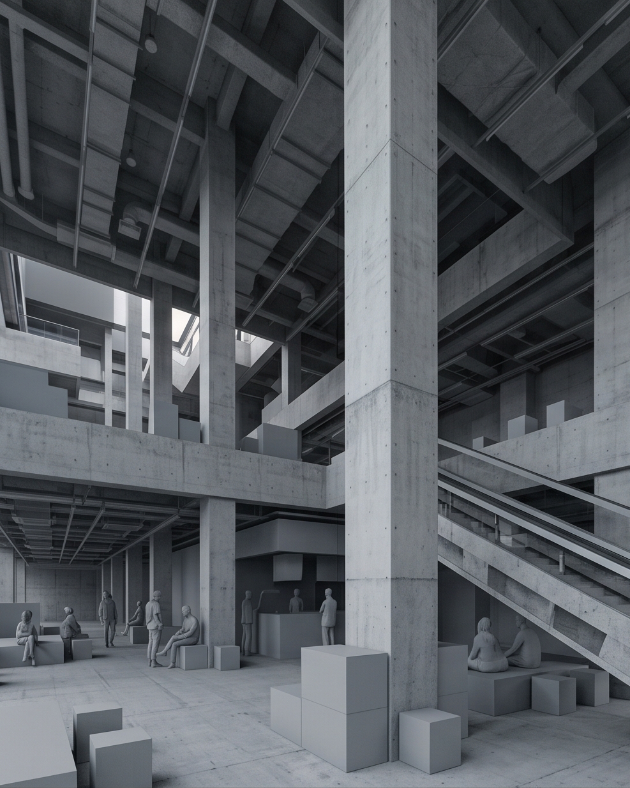
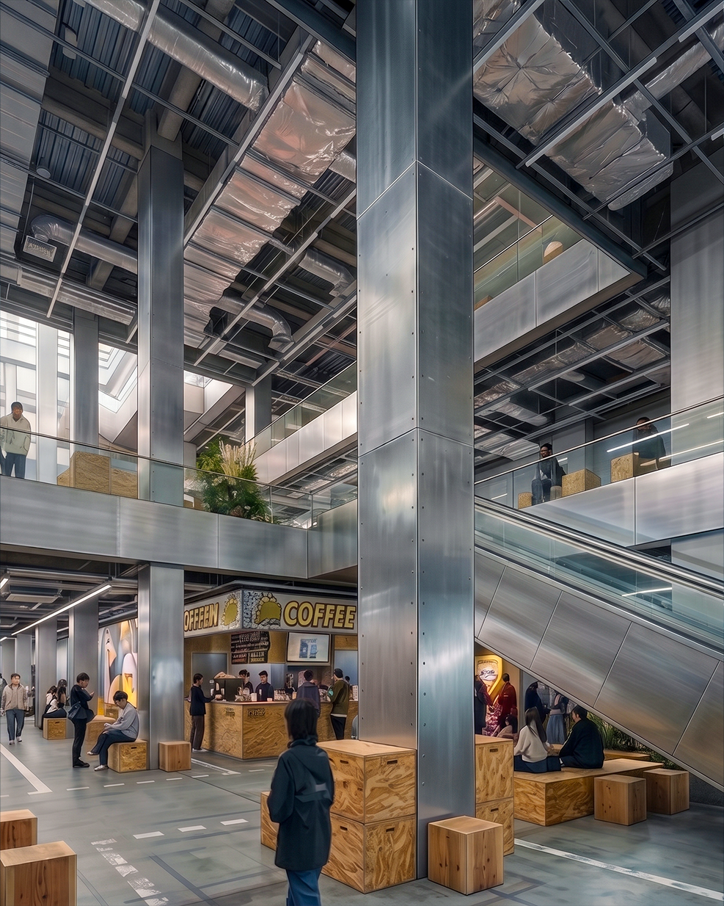
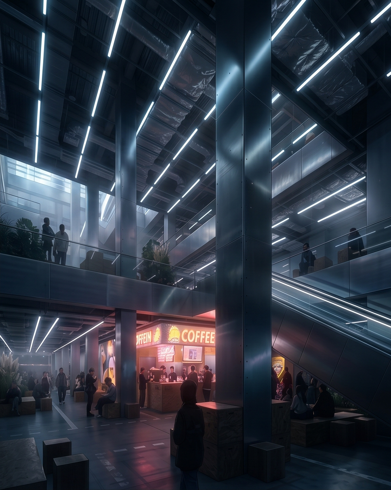
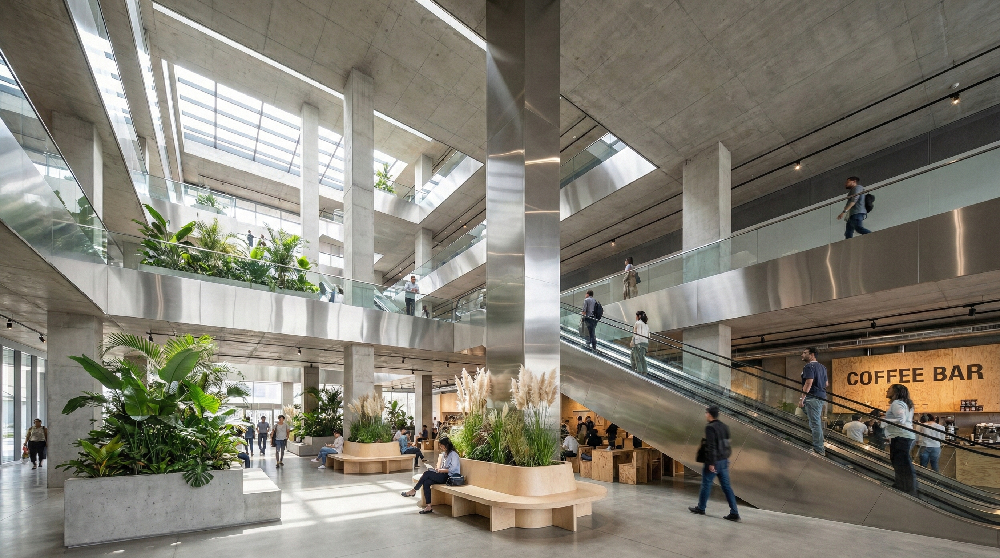
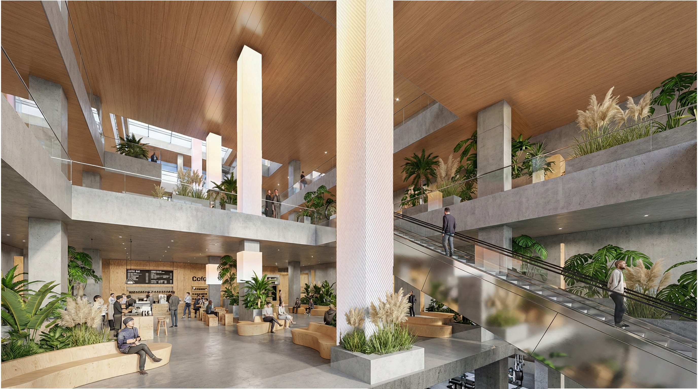

?
Problem 01
如何保留空间结构？
商业空间生成容易破坏透视、边界、体块关系和主要开口，导致图像虽然好看但无法服务设计判断。
基于 ComfyUI、FLUX、Qwen、Canny、Depth 等控制方式，将商业建筑与室内设计中的空间结构、立面语义和视觉风格转化为可复用的生成工作流。
这个项目的核心不是追求单张图像的视觉冲击力，而是把建筑设计中的空间结构、材料语义、商业氛围和风格判断拆解为可以被控制、记录和复用的生成变量。
我将建筑生成流程拆分为结构控制、语义控制、风格控制和批量实验四个层级。每一个设计问题都对应一套明确的 AIGC 控制方法，从而让生成结果从随机出图转向可追踪的设计迭代。
商业空间生成容易破坏透视、边界、体块关系和主要开口，导致图像虽然好看但无法服务设计判断。
立面、材质、灯光、店铺陈列和室内氛围都需要明确限定，否则生成结果容易偏离商业建筑语境。
单次出图难以复现，Seed、CFG、采样器、参考图权重和负面提示词都会影响最终视觉调性。
前期方案需要快速测试多种空间风格，而不是依赖人工反复建模和单张效果图筛选。
通过边缘、深度和参考图权重，约束空间构图、透视关系、开口位置和主要体块边界。
将店铺立面、室内材质、照明方式、陈列系统和商业氛围拆解为可复用的语义模块。
记录 Seed、CFG、采样器、模型版本、参考权重和负面提示词，让风格迭代具备可复现性。
将每次生成视为实验，记录成功条件和失败原因，用于判断哪些参数组合可稳定服务设计讨论。
我将建筑生成流程拆分为三个层级：结构控制、语义控制和风格控制。结构控制确保空间边界和透视关系不被破坏；语义控制限定材质、尺度、立面元素和室内氛围；风格控制统一图像调性和商业表达。

使用 Canny、Depth 和参考图权重，约束空间构图、主要体块、透视关系与边界线索。

将基础模型、参考图和控制图层组合，避免 AI 生成过程中过度改写原始空间结构。

建立零售立面、室内材质、商业氛围相关 Prompt 词库，减少语义偏移。

记录 Seed、CFG、采样器、参考图权重和负面提示词，实现可复用的风格迭代。
每一次生成都被视为一次实验，而不是一次孤立的出图。我记录关键词权重、Seed、模型参数、参考图关系和失败原因，用于判断哪些参数组合能够稳定产出符合空间逻辑的结果。




生成流程的价值不只在最终图像，也在于可被复盘的过程：控制图、词库、参数、视频记录和多轮图像实验共同构成了一个可迁移的 Interior AI 工作流。
使用视频记录生成流程和视觉结果，让工作流不仅可展示，也可用于说明系统能力。
将风格、材料、空间和商业氛围沉淀为词库，为团队复用提供标准化入口。

工作流截图用于说明模型、参考图、控制图和参数之间的连接关系。

批量输出不同版本，用于比较空间氛围、风格方向和商业表达的差异。